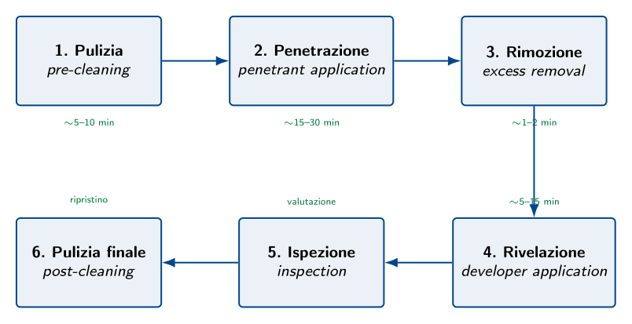

Esempio di Prova MIM — Anno 2015
Traccia ministeriale di esempio (MIM)
Il presente capitolo è dedicato alla traccia di esempio pubblicata nel 2015 dal Ministero dell'Istruzione e del Merito (MIM) per la disciplina A038 — Struttura, Costruzione, Sistemi e Impianti del Mezzo Aereo — nell'ambito dell'indirizzo ITCT Costruzioni Aeronautiche. Trattandosi di una prova esemplificativa (non di una sessione d'esame reale), non è associata ad un anno scolastico specifico; il documento ministeriale originale riporta la dicitura generica "Esempio di prova".
La traccia si concentra su tre tematiche complementari: la scelta motoristica con relativo dimensionamento del serbatoio in funzione di un'autonomia assegnata, l'inquadramento normativo che presiede alla certificazione del velivolo, e l'esecuzione di una prova non distruttiva a supporto delle attività di manutenzione e collaudo. Il quesito 1 della stessa prova (omesso da questo opuscoletto in quanto di natura prettamente numerica) richiede di descrivere e dimensionare di massima il velivolo di riferimento: nelle risposte che seguono si farà pertanto riferimento a un velivolo da turismo monomotore a quattro posti di massa massima al decollo dell'ordine di 1100 kg, configurazione tipica di un velivolo simile al Cessna 172 o al Piper PA-28.
Motorizzazione e dimensionamento del serbatoio combustibile
Scelta della motorizzazione
Per un velivolo da turismo a quattro posti della classe ipotizzata, la motorizzazione standard nel mercato dell'aviazione generale è il motore alternativo a quattro tempi a cilindri contrapposti (flat engine, configurazione boxer), raffreddato ad aria, alimentato a benzina avio (avgas 100 LL). Le ragioni di questa scelta sono molteplici:
- ottimo rapporto potenza/peso ($0{,}5$–$0{,}6\,\mathrm{kW/kg}$) e affidabilità consolidata;
- architettura piatta che riduce la sezione frontale della gondola motore;
- costo di acquisto e di manutenzione contenuto rispetto alle turbomacchine;
- disponibilità capillare di avgas negli aeroporti dell'aviazione generale;
- efficienza di crociera significativamente superiore a quella di un turbomotore di pari potenza nel campo delle basse-medie potenze ($\le 300\,\mathrm{hp}$).
Una scelta tipica è il Lycoming O-360-A4M, un quattro cilindri boxer da 5,9 L di cilindrata che eroga una potenza nominale al decollo di 180 hp (corrispondenti a circa 134 kW) a $2700\,\mathrm{rpm}$. Questo motore equipaggia, con piccole varianti, il Piper PA-28 Cherokee 180, il Mooney M20 e numerosi altri velivoli della stessa classe.
Procedimento di dimensionamento
Passo 1 — Potenza media in crociera.
Si assume che il velivolo voli in crociera economica al 75 % della potenza massima: $$P_c = \eta_P \cdot P_{\max} = 0{,}75 \cdot 134 \approx 100{,}5\,\mathrm{kW}$$Passo 2 — Consumo orario di combustibile.
Per la definizione stessa di consumo specifico al freno, la portata massica oraria di combustibile vale: $$\dot{m}_c = c_{sf} \cdot P_c = 0{,}26 \cdot 100{,}5 \approx 26{,}1\,\mathrm{kg/h}$$Passo 3 — Tempo di volo totale.
L'autonomia operativa di 3 h deve essere maggiorata della riserva regolamentare: $$t_{tot} = t_{op} + t_{ris} = 3{,}0 + 0{,}5 = 3{,}5\,\mathrm{h}$$Passo 4 — Massa di combustibile imbarcato.
Per garantire l'autonomia richiesta: $$m_c = \dot{m}_c \cdot t_{tot} = 26{,}1 \cdot 3{,}5 \approx 91{,}4\,\mathrm{kg}$$Passo 5 — Volume del serbatoio.
Dalla densità dell'avgas: $$V_c = \frac{m_c}{\rho_c} = \frac{91{,}4}{0{,}72} \approx 127\,\mathrm{L}$$Considerando un coefficiente di non utilizzabilità del 3 % (combustibile residuo non aspirabile dalle pompe per ragioni di assetto e per la posizione delle prese), il volume geometrico del serbatoio deve essere maggiorato: $$V_{geom} = \frac{V_c}{0{,}97} \approx 131\,\mathrm{L} \quad \rightarrow \quad \boxed{V_{geom} \approx 130\,\mathrm{L}}$$
Soluzione costruttiva proposta
Il volume calcolato si ripartisce in modo simmetrico in due serbatoi alari integrali da 65 L ciascuno, ricavati nel cassone alare fra i due longheroni in prossimità della radice. La soluzione integrale presenta numerosi vantaggi:
- posiziona il baricentro del combustibile in prossimità del baricentro del velivolo, minimizzando le variazioni di centraggio durante il volo;
- collocando le masse vicino alla radice riduce i momenti flettenti d'estremità;
- utilizza un volume strutturalmente disponibile riducendo l'ingombro nella fusoliera;
- realizza un effetto di wing relief sul momento flettente alla radice grazie alla distribuzione di peso interno all'ala.
L'impianto è completato da: prese e sfiati con valvole di non ritorno, indicatori di livello capacitivi, una pompa elettrica di ausilio (per avviamento e fasi critiche) in parallelo alla pompa meccanica trascinata dal motore, un selettore di alimentazione LEFT/BOTH/RIGHT/OFF accessibile al pilota, e un filtro decantatore (gascolator) nel punto più basso del circuito per la separazione di acqua e impurità.
Caratteristiche del velivolo e norme di certificazione
Caratteristiche del velivolo
Il velivolo dimensionato nei quesiti precedenti possiede le caratteristiche sintetizzate nella tabella seguente, tipiche di un aeroplano da turismo monomotore in categoria Normal.
| Caratteristica | Valore tipico | Riferimento |
| Massa massima al decollo (MTOW) | $\sim1100\,\mathrm{kg}$ | $< 5670\,\mathrm{kg}$ $\to$ CS-23 |
| Numero di posti | 4 (1 pilota + 3 passeggeri) | $\le 9$ + pilota in CS-23 Normal |
| Tipo di propulsione | Monomotore alternativo, elica | Velivolo da turismo |
| Potenza installata | 180 hp ($134\,\mathrm{kW}$) | Lycoming O-360 |
| Configurazione alare | Monoplano ad ala bassa o alta, a sbalzo | Tipica di GA |
| Carrello | Tricicolo fisso o retrattile | Optional in funzione della categoria |
| Velocità di crociera | $\sim$220 km/h (120 kt) | VFR/IFR diurno |
| Velocità di stallo $V_S$ | $\sim$100 km/h (55 kt) | Limitata da CS-23.49 |
| Quota massima operativa | $\sim$4000 m (13000 ft) | Senza pressurizzazione |
| Autonomia | $\ge 3\,\mathrm{h}$ (operativa) | Da specifica di progetto |
| Categoria di certificazione | Normal | CS-23 Amendment 5 |
| Fattore di carico limite | $n_{lim} = +3{,}8 / -1{,}5$ | CS-23.337 |
Quadro normativo della certificazione
Le specifiche di certificazione (Certification Specifications, CS) emanate da EASA derivano dal Regolamento (UE) n. 748/2012, denominato Part-21 "Airworthiness and Environmental Certification". La famiglia delle CS è articolata per tipologia di aeromobile, come riportato nella tabella seguente.
| Norma | Equivalente FAA | Tipologia di aeromobile |
| CS-LSA | ASTM F2245 | Velivoli da diporto sportivo (Light Sport Aeroplanes), MTOW $\le 600\,\mathrm{kg}$ |
| CS-VLA | — | Velivoli leggerissimi (Very Light Aeroplanes), MTOW $\le 750\,\mathrm{kg}$ |
| CS-22 | — | Alianti e motoalianti, MTOW $\le 750\,\mathrm{kg}$ |
| CS-23 | FAR Part 23 | Aeroplani in categoria Normal, Utility, Acrobatic e Commuter |
| CS-25 | FAR Part 25 | Grandi aeroplani da trasporto |
| CS-27 / CS-29 | FAR Part 27/29 | Piccoli/grandi aerogiri (elicotteri) |
| CS-E | FAR Part 33 | Motori aeronautici |
| CS-P | FAR Part 35 | Eliche |
Il velivolo del nostro caso, avendo MTOW inferiore a 8618 kg (19000 lb) e meno di 19 passeggeri, ricade integralmente sotto la CS-23 Amendment 5 del 31 marzo 2017, che ha riorganizzato la classificazione precedente facendo confluire nella categoria Normal le tipologie precedenti Normal/Utility/Acrobatic/Commuter, con livelli di certificazione differenziati in base alle prestazioni richieste.
Categorie di certificazione (impostazione tradizionale, CS-23 Amdt. 4)
Pur con la riorganizzazione del 2017, la classificazione storica rimane utile dal punto di vista didattico per comprendere lo spettro operativo ammesso da ciascuna categoria.
- Categoria Normal ($\mathbf{N}$)
- Operazioni di volo non acrobatiche; comprende stalli (esclusi quelli accelerati), otto lenti, chandelles e virate con angolo di sbandamento inferiore a $60°$. Fattore di carico limite: $+3{,}8 / -1{,}5$.
- Categoria Utility ($\mathbf{U}$)
- Aggiunge alle manovre della Normal le viti, le otto lenti, le virate con sbandamento fino a $90°$ e i loop positivi. Fattore di carico limite: $+4{,}4 / -1{,}76$.
- Categoria Acrobatic ($\mathbf{A}$)
- Nessuna limitazione alle manovre se non quelle derivanti dalle prove di volo di certificazione. Fattore di carico limite: $+6{,}0 / -3{,}0$.
- Categoria Commuter ($\mathbf{C}$)
- Velivoli da trasporto regionale plurimotori a elica fino a 19 passeggeri; volo normale, stalli (esclusi accelerati) e virate con sbandamento $< 60°$. Fattore di carico limite: $+3{,}8 / -1{,}5$.
Processo di certificazione
L'iter di certificazione di un nuovo aeromobile si articola nelle seguenti fasi:
- Type Certificate (TC): certificato di tipo rilasciato dall'autorità (EASA/FAA) al costruttore, attesta che il progetto dell'aeromobile soddisfa i requisiti applicabili. Richiede la presentazione di una completa Type Certification Data Sheet (TCDS) con disegni, calcoli, prove di laboratorio e prove di volo.
- Production Certificate (PC): certificato di produzione rilasciato all'organizzazione manifatturiera, attesta che essa è in grado di realizzare in serie l'aeromobile in conformità al TC.
- Certificate of Airworthiness (C of A): certificato di navigabilità individuale, rilasciato per ogni esemplare prodotto, attesta che il singolo velivolo è conforme al tipo certificato e si trova in condizione di volo sicuro.
- Continuous Airworthiness: il mantenimento dell'aeronavigabilità nel tempo è regolato dalla Part-M (organizzazioni CAMO, Continuous Airworthiness Management Organization), dalla Part-145 (manutenzione), dalla Part-66 (licenze del personale di manutenzione) e dalla Part-147 (scuole di formazione del personale).
Procedimento di una prova non distruttiva
Panoramica delle principali PND
Le PND più diffuse in ambito aeronautico, classificate per tipologia di difetto rilevabile e di materiale ispezionabile, sono riassunte nella tabella seguente.
| Sigla | Metodo | Caratteristiche e impieghi |
| VT | Esame visivo | Difetti superficiali macroscopici; richiede solo strumenti ottici (lenti, endoscopi). |
| PT | Liquidi penetranti | Difetti superficiali aperti su materiali non porosi; metodo capillare. |
| MT | Particelle magnetiche | Difetti superficiali e sub-superficiali su materiali ferromagnetici; metodo magnetico. |
| ET | Correnti indotte (eddy current) | Difetti superficiali e sub-superficiali su materiali conduttori; molto usato in manutenzione (cricche sotto verniciatura, attorno ai fori dei rivetti). |
| UT | Ultrasuoni | Difetti interni in materiali metallici e compositi; misura di spessori residui (corrosione interna). |
| RT | Radiografia (raggi X o $\gamma$) | Difetti interni in saldature, fusioni, strutture sandwich; richiede protezione per il personale. |
| TT | Termografia attiva | Distacchi (disbond) e delaminazioni in compositi; analisi del calore disperso. |
| AE | Emissione acustica | Monitoraggio in tempo reale durante prove di carico; rileva la propagazione di cricche attive. |
Procedimento dettagliato: l'esame con liquidi penetranti (PT)
Fra le tecniche elencate, il controllo con liquidi penetranti è la PND più semplice da eseguire ed è quella che meglio si presta a una descrizione procedurale completa. Si fonda sul principio della capillarità: un liquido a bassa tensione superficiale, applicato sulla superficie del pezzo, penetra spontaneamente all'interno di eventuali discontinuità aperte (cricche, porosità, ripiegature) e ne resta intrappolato. Una successiva applicazione di un rivelatore polverulento "estrae" il liquido per capillarità inversa, rendendo la discontinuità visibile a occhio nudo. È applicabile a qualsiasi materiale non poroso (leghe leggere, acciai, titanio, ceramiche, vetri, plastiche).
Apparecchiatura e materiali necessari.
- Sgrassante/detergente per la pulizia preliminare;
- liquido penetrante (a contrasto cromatico, di solito rosso, oppure fluorescente);
- rimuovente (acqua, solvente o emulsificante secondo il tipo di penetrante);
- rivelatore (polvere bianca a base di talco, applicata a secco, in sospensione acquosa o in spray);
- lampada di Wood (luce ultravioletta) nel caso di penetranti fluorescenti;
- attrezzatura di pulizia finale.
Procedimento.
Il controllo si articola in sei fasi, schematizzate nella figura seguente e descritte nel dettaglio.
Fase 1 — Pulizia preliminare (pre-cleaning).
La superficie del pezzo deve essere accuratamente sgrassata e ripulita da olio, vernice, ossidi e residui di lavorazione che potrebbero ostruire le discontinuità impedendone la penetrazione. Si utilizzano solventi adeguati o, nei casi più difficili, decapaggi chimici. Una pulizia inadeguata è la causa più frequente di falsi negativi in questa tipologia di prova.Fase 2 — Applicazione del penetrante.
Il liquido penetrante si applica per immersione, spruzzo o pennellatura, garantendo la copertura completa della superficie da ispezionare. Il pezzo viene quindi lasciato a riposo per un tempo di permanenza ($t_p$) di 15–30 min, durante il quale la capillarità fa sì che il liquido si insinui all'interno di ogni discontinuità aperta sulla superficie. Il tempo varia in funzione del materiale, della tipologia di difetto cercato e della temperatura ambiente.Fase 3 — Rimozione dell'eccesso.
Il penetrante in eccesso che resta sulla superficie viene rimosso accuratamente. La modalità dipende dal tipo di penetrante:- lavabili in acqua: rimozione diretta con getto d'acqua a bassa pressione;
- post-emulsificabili: si applica preventivamente un emulsificante che rende lavabile il penetrante;
- rimovibili a solvente: si utilizza una salvietta inumidita con solvente, mai applicato direttamente sulla superficie.
Fase 4 — Applicazione del rivelatore.
Si applica uno strato sottile e uniforme di rivelatore (polvere bianca o sospensione spray). Per capillarità inversa, il penetrante intrappolato nelle discontinuità migra dall'interno verso la superficie attraverso il rivelatore, generando una indicazione visibile, di forma e dimensioni amplificate rispetto al difetto reale. Il rivelatore si lascia agire per 5–15 min.Fase 5 — Ispezione.
L'ispezione si esegue con luce visibile (1000 lx) per i penetranti a contrasto cromatico (rossi su sfondo bianco), o con lampada di Wood in cabina oscurata per i penetranti fluorescenti (sensibilità superiore). Le indicazioni rilevate vengono classificate per forma:- indicazioni lineari (lunghezza $\ge 3 \times$ larghezza): cricche, ripiegature, mancanze di penetrazione nelle saldature;
- indicazioni rotondeggianti: porosità, soffiature;
- indicazioni diffuse: difetti generalizzati o problemi di pulizia.
Fase 6 — Pulizia finale (post-cleaning).
Al termine dell'ispezione il pezzo viene accuratamente ripulito da ogni residuo di rivelatore e penetrante, che potrebbero altrimenti innescare fenomeni corrosivi durante il successivo esercizio. Si procede infine alla redazione del rapporto di prova, che riporta: identificativo del pezzo, prodotti utilizzati, tempi di permanenza, indicazioni rilevate (con fotografie), giudizio di accettabilità.Vantaggi e limiti della prova ai liquidi penetranti
| Vantaggi | Limiti |
| Applicabile a qualsiasi materiale non poroso (metalli, leghe, ceramiche, plastiche, vetri). | Rileva solo difetti aperti in superficie: i difetti interni o sub-superficiali sfuggono completamente. |
| Costo dell'attrezzatura molto contenuto. | La superficie deve essere accuratamente pulita; i pezzi verniciati richiedono sverniciatura preliminare. |
| Procedura semplice, applicabile in officina e a bordo del velivolo. | I tempi di esecuzione (totale $\ge 30\,\mathrm{min}$ per pezzo) sono incompatibili con controlli rapidi su grandi volumi. |
| Eccellente sensibilità per cricche di fatica, anche di pochi $\mu$m. | I prodotti chimici impiegati richiedono dispositivi di protezione individuale e gestione come rifiuti speciali. |
| Indicazioni interpretabili visivamente senza strumentazione complessa. | Non quantifica la profondità del difetto (richiede prove complementari, ad es.\ ultrasuoni). |